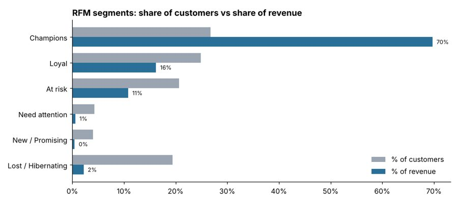

Online retail analytics — revenue, retention & customer value
Two years of real transactions (1.07 M invoice lines) from a UK online retailer, modelled in SQL and turned into recommendations.
- Layered DuckDB model (staging → facts → dimensions) with automated data-quality checks
- Growth was flat (+0.1 %), so retention is the lever: ~21 % of new customers return the next month
- 27 % of customers ("Champions") = 70 % of revenue; 1,210 at-risk customers worth £1.85 M lifetime
